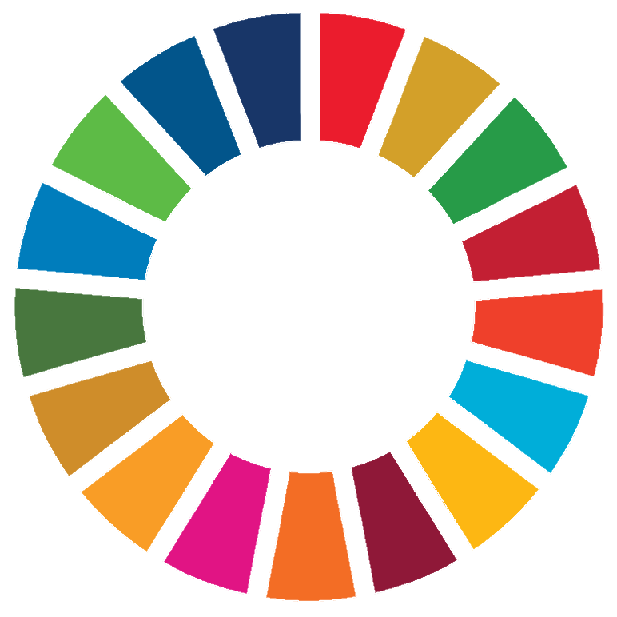
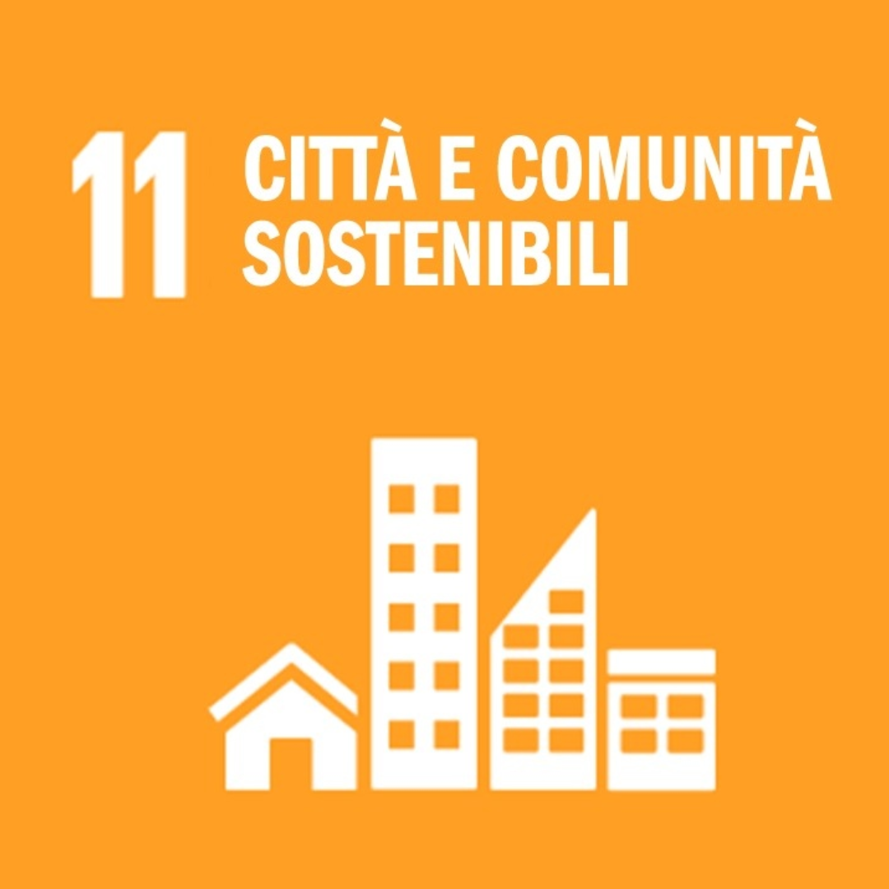
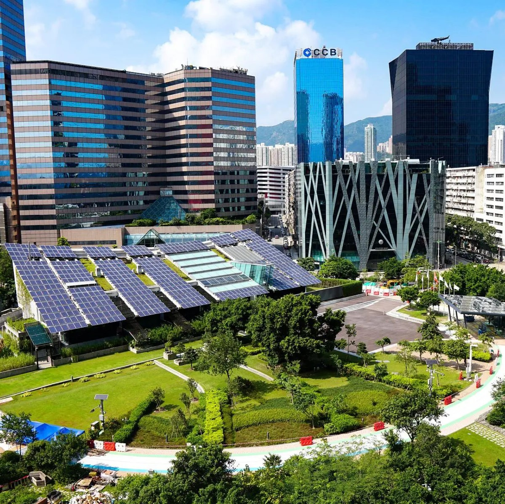

Cos'è l'agenda 2030?  L’agenda 2030 è un programma d’azione per le persone, il pianeta e la prosperità sottoscritto nel settembre 2015 dai governi dei paesi dell’ONU. Contiene 17 Obiettivi per lo Sviluppo Sostenibile in un grande programma d’azione per un totale di 169 traguardi. L’avvio ufficiale degli Obiettivi per lo Sviluppo Sostenibile ha coinciso con l’inizio del 2016, guidando il mondo sulla strada da percorrere nell’arco dei prossimi 15 anni, infatti i paesi si sono impegnati a raggiungerli entro il 2030.
Clicca sulla foto qui sopra per sapere di più
L'obiettivo 11: città e comunità sostenibili  L’obiettivo 11 mira a ridurre l’inquinamento prodotto dalle città, in particolare per quanto riguarda la qualità dell’aria e la gestione dei rifiuti. Lo sviluppo urbano dovrà essere più inclusivo e sostenibile, tra l’altro grazie a una pianificazione degli insediamenti partecipativa, integrata e sostenibile.
Clicca sulla foto qui sopra per sapere di più
Requisiti per una città sostenibile  Nella classifica delle città sostenibili ci sono alcuni elementi fondamentali. I requisiti per una smart city vanno dalle tecnologie più innovative al cambiamento di alcune abitudini dei cittadini. Una città sostenibile deve avere: Suggerimento: clicca sui rettangoli blu
I traguardi da raggiungere entro il 2030 Le città sono centri per idee nuove, per il commercio, la cultura, la scienza, la produttività e lo sviluppo sociale. In alcuni casi le città hanno permesso alle persone di migliorare la loro condizione sociale ed economica. Ciononostante, persistono molte sfide per mantenere i centri urbani come luoghi di lavoro e prosperità e che allo stesso tempo non danneggino il territorio e le risorse. Le sfide poste dall’ambiente urbano includono il traffico, la mancanza di fondi per fornire i servizi di base, la scarsità di alloggi adeguati, il degrado delle infrastrutture. Le sfide che le città affrontano possono essere vinte in modo da permettere loro di continuare a prosperare e crescere, migliorando l’utilizzo delle risorse e riducendo l’inquinamento e la povertà. Quindi i traguardi da raggiungere entro il 2030, secondo l'obiettivo 11, sono: Suggerimento: clicca sui numeri
La smart city ideale La smart city ideale non può fare a meno di alcuni elementi "fondamentali", per esempio: Suggerimento: passa il mouse sopra i rettangoli